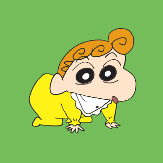
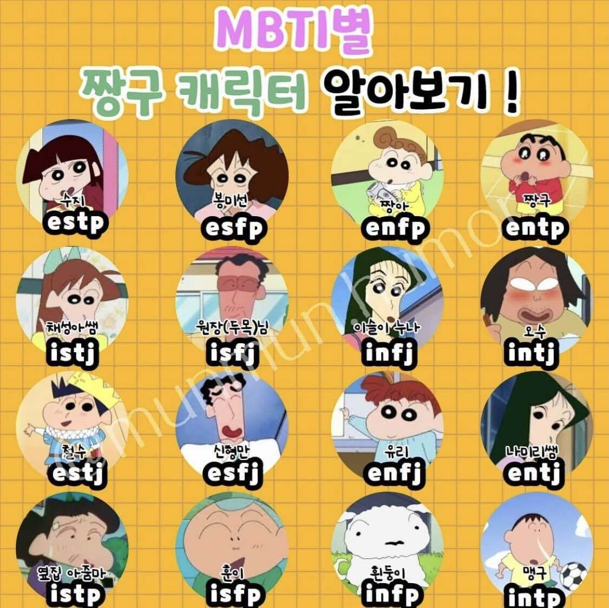

프로그램 소개
예쁜 누나와 초코비를 좋아하는 5살 짱구 살인적인 발냄새를 가진 아빠 세일과 미남을 좋아하는 엄마 귀여운 여동생 짱아 그리고 귀여운 강아지 흰둥이! 이들의 평범하지만 신나는 일상 스토리!
신짱구 가족
캐릭터 소개
주인공 짱구 소개

신짱구
떡잎유치원에 다니는 해바라기 반 유치원생. 액션 가면을 좋아하고 예쁜 누나와 초코비를 좋아한다. 늘 장난을 치며 주위 사람들을 곤란하게 하기도 하지만 미워할 수 없는 귀염둥이!
가족 소개

엄마 봉미선
낮잠을 즐기며 바겐세일을 유난히 좋아한다. 백화점 세일하는 곳은 귀신같이 찾아내는 쇼핑의 초고수. 동네 아줌마와 2시간 정도 수다를 떠는 것은 기본이며 짱구에게 절대 지지 않을 만큼의 강력한 개구쟁이 파워를 지녔다. 그러나 누구보다도 가정을 사랑하는 따뜻한 엄마이다.
아빠 신형만
중소기업의 만년 계장. 살인적인 발 냄새로 가족들의 후각을 위협한다. 휴일 아침 늦잠을 자는 것이 소원이지만 대체로 짱구에게 이끌려 새로운 사건에 휘말리게 된다. 누구보다 가족을 사랑하는 아빠다.
동생 신짱아
짱구의 여동생. 이제 걸음마를 하는 아기들과 어울리지 않는 행동을 한다. 아직 말을 하진 못하지만, '아따따~'라는 소리로 모든 의사소통이 가능하다. 엄마를 닮아서 반짝이는 보석을 좋아하며 미남에는 사족을 못 쓴다.
반려견 흰둥이
짱구가 주워온 잡종의 강아지. 몸 색깔이 하얘서 흰둥이. 신씨 집안에서 가장 영리한 인물로 산책에 데리고 가지 않으면 혼자 산책을 가거나 밥을 주지 않으면 상점가에서 개인기를 보여주고 관객에게 밥을 구하거나, 짱구 대신에 장난감을 치우기도 한다.
MBTI
- 신짱구: ENTP
- 봉미선: ESFP
- 신형만: ESFJ
- 신짱아: ENFP
- 흰둥이: INFP